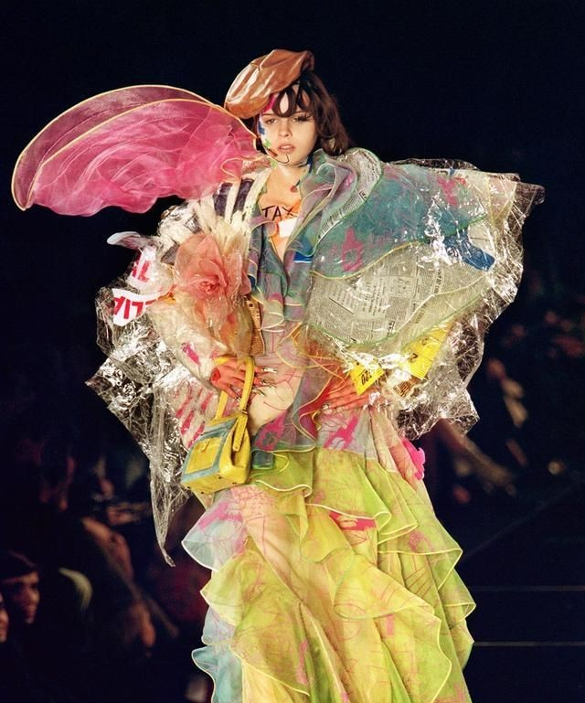
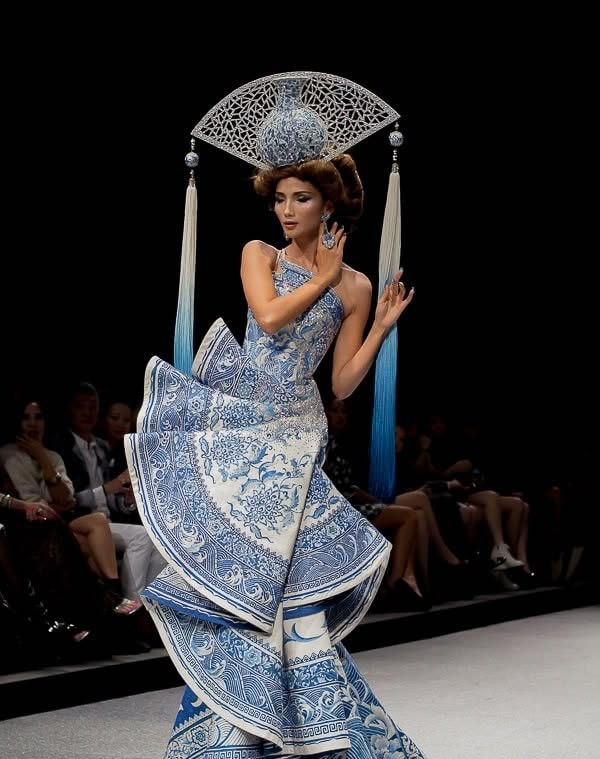
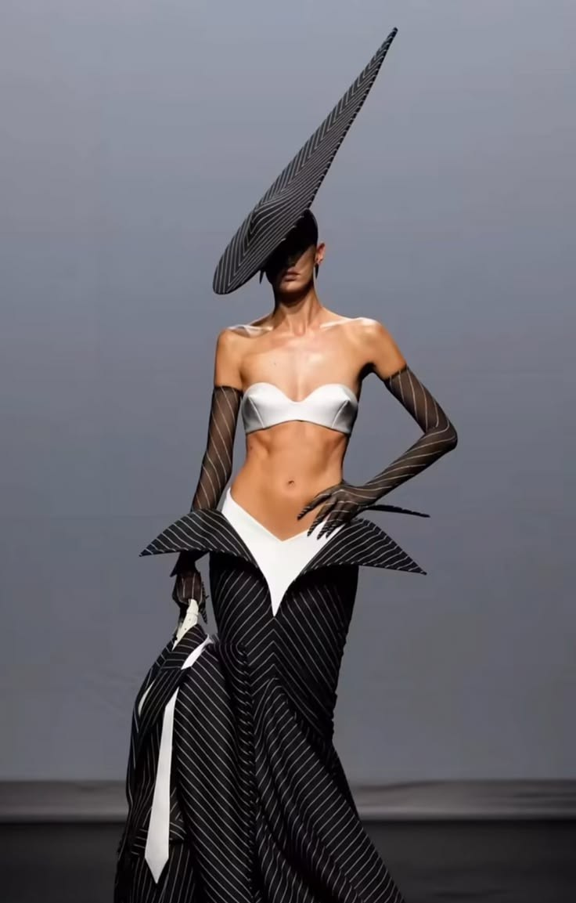
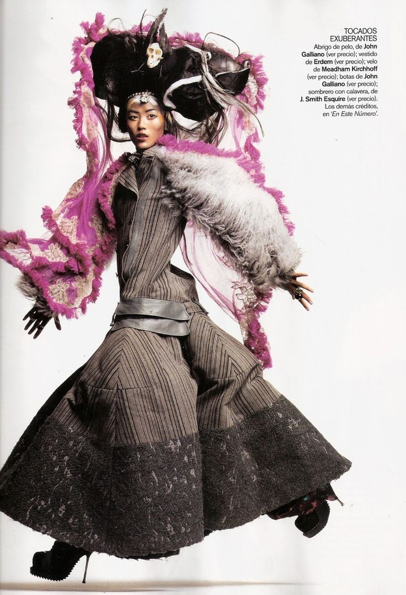
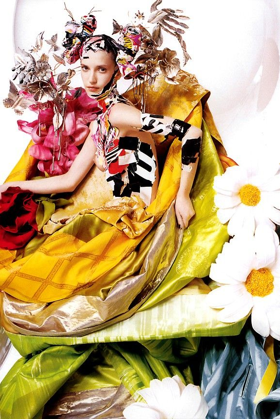
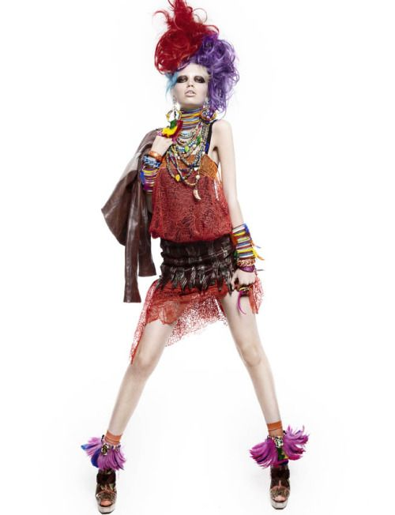
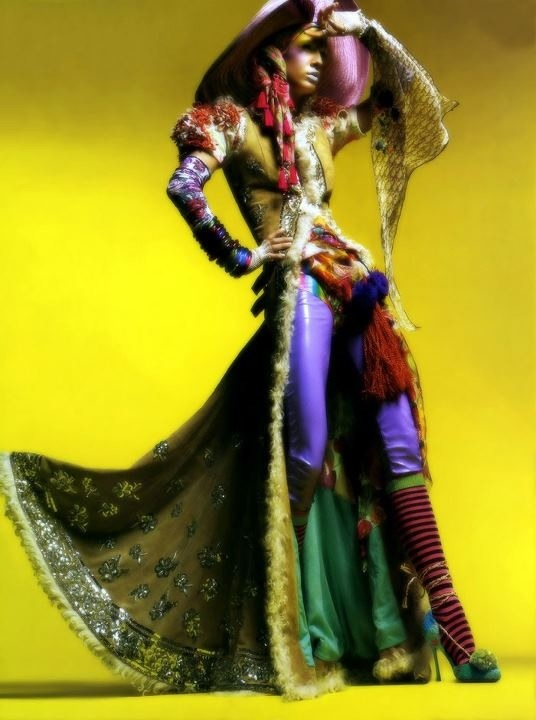

THE TERM AVANT-GARDE COMES FROM THE FRENCH PHRASE MEANING "ADVANCE GUARD" OR "VANGUARD." IN FASHION, IT REFERS TO DESIGNS THAT ARE EXPERIMENTAL, INNOVATIVE, AND OFTEN AHEAD OF THEIR TIME. AVANT-GARDE STYLE IS NOT ABOUT FOLLOWING TRENDS—IT'S ABOUT PUSHING BOUNDARIES, MAKING BOLD STATEMENTS, AND REDEFINING WHAT CLOTHING CAN BE.




Avant-garde fashion has roots in the early 20th century, when designers began rebelling against the constraints of traditional dress. Influenced by modern art movements like Dadaism and Futurism, fashion pioneers like Elsa Schiaparelli introduced surreal, artistic elements into their collections.
Over time, the avant-garde movement expanded to include Japanese innovators like Rei Kawakubo and Yohji Yamamoto, whose all-black, asymmetrical designs revolutionized the industry. Today, avant-garde continues to evolve, fueled by designers who embrace fashion as a form of performance and protest.

Known for his dystopian, edge silhouettes.

Romantic, dark, and poetic designs.

Futuristic and theatrical pieces.
.jpg)
Radical designs that blur the line between fashion and art.